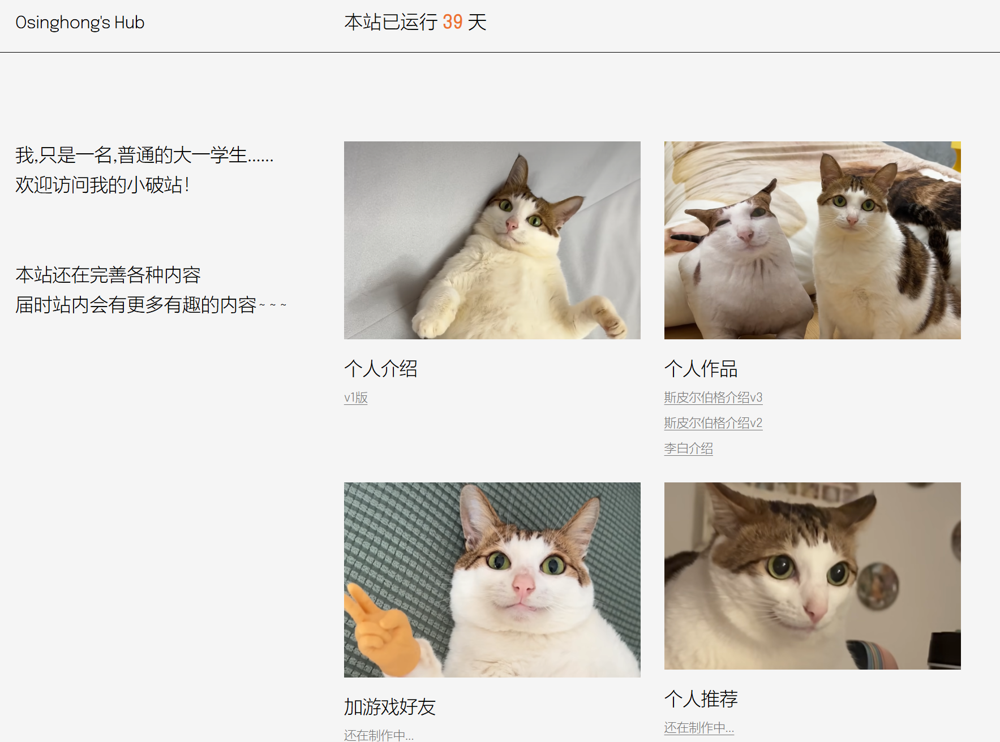
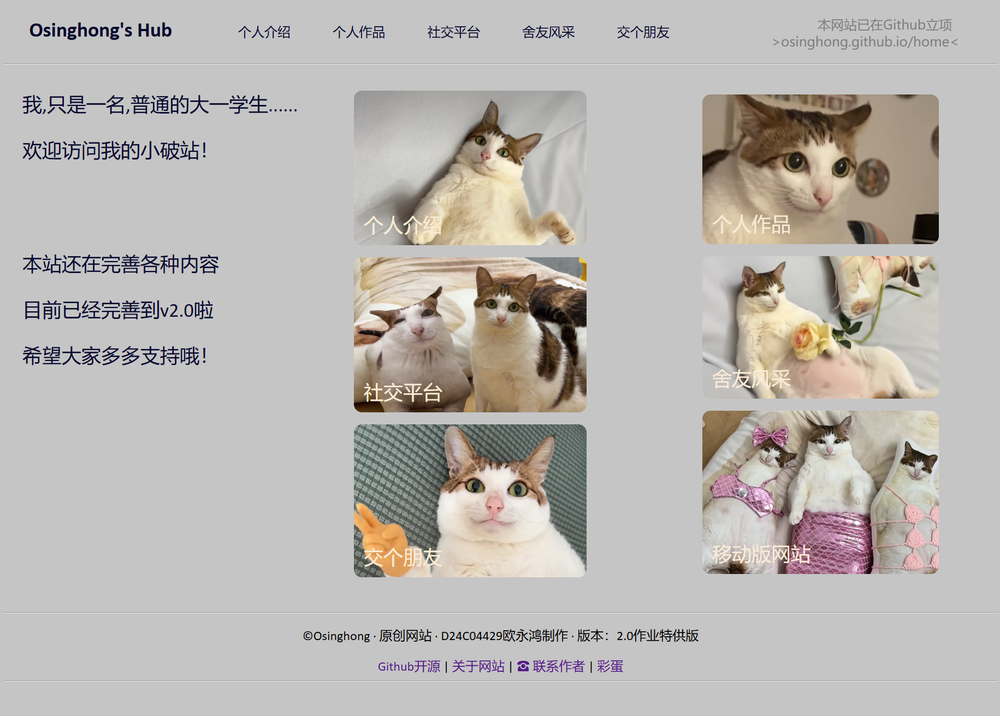

关于Osinghong's Hub网站
网站的初衷
是为了大家更好的了解作者，同时能更好地一起学习其他H5，Mysql等技能，因此开设 了本站，为大家创造交流空间。
V2.0都更新了什么？
网站代码进行了重写，大幅消减了无用代码（包含大量WP样式代码），提升了桌面端 网站访问速度；同时，网站实现了100%原创内容。为了提升浏览体验，我们在V1版本改进 时就使用了网页服务器（技术来源于HUANXICLOUD） 存储图片，加快了图片加载速度。
v1站点与v2站点
 · 设计延续v1，无用代码大量缩减
· 内容更加丰富，展现作者实力
短短几天时间，是什么促使作者能高效建站？
作者在设计网页时已经提前布局了页面设计，方便添加不同的内容，使新建页面保持简洁的同时能大幅缩减时间。 在此，我也将模板展示出来供大家参考！点我进入模板页面
V1.0版本还会放弃吗？
不会。得益于WP的适配能力，V1主页适合移动用户访问，作者会继续保留。
在V2站点中的其他网站优化
- · 重新梳理并优化了网页排列样式
- · 增加了一些动效
- · 优化了作品资源结构